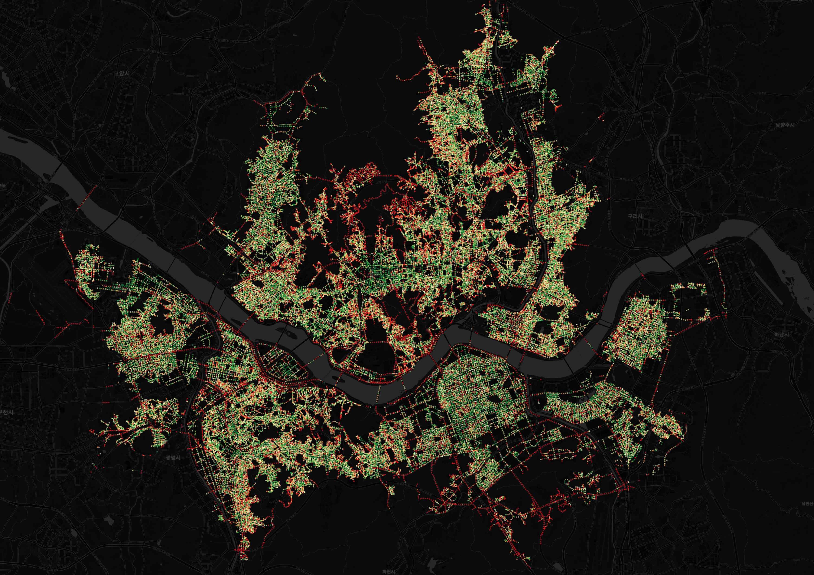
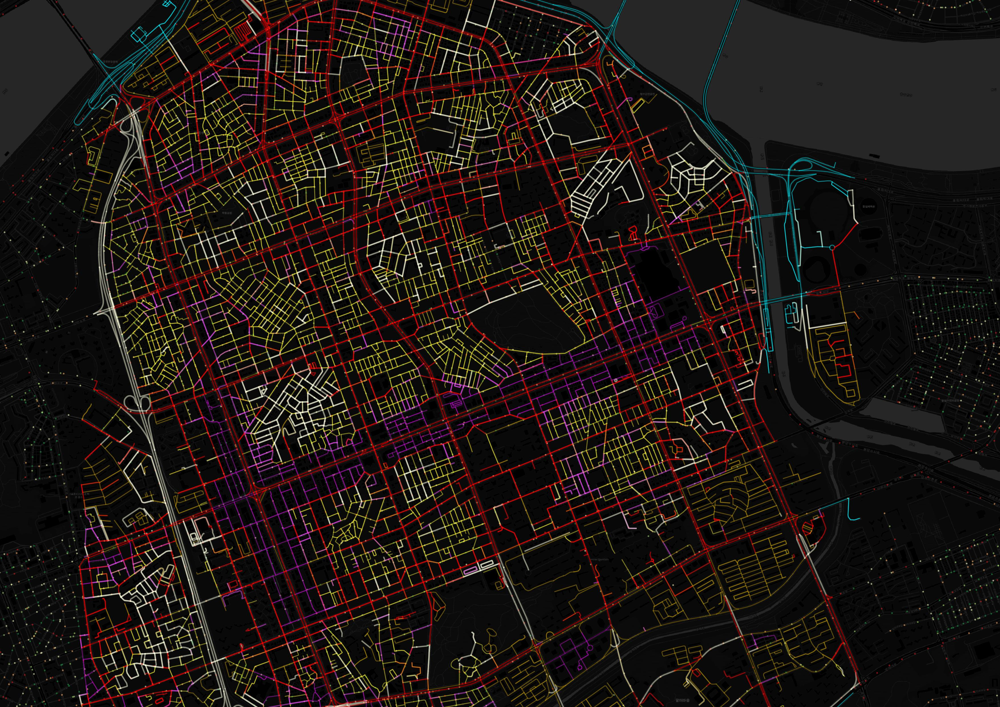
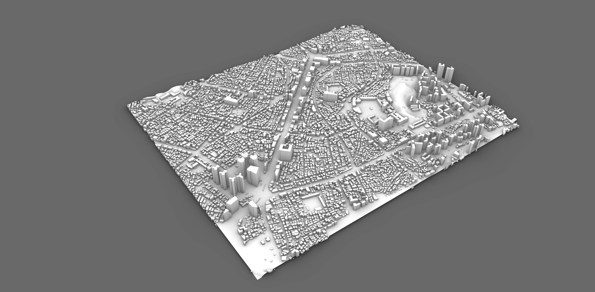

Main Research Interests 주요 연구 분야

AI for Urban Design 도시설계를 위한 인공지능
Integrating artificial intelligence into various urban planning fields including urban design, urban regeneration, and district-level planning based on performance criteria. 도시설계, 지구단위계획, 도시재생 등 다양한 도시설계 영역에 인공지능을 접목하여, 새로운 평가지표를 개발 & 적용하여 설계안을 만들고 성능지표에 기반한 평가 방법을 개발하고 있습니다.
On-going projects 진행 중인 연구
- Development of predictive and generative AI for urban environment assessment 도시환경 진단을 위한 다양한 지표를 개발 위한 예측·생성형 AI 모델 개발
- Development of open-source object detection models for hard-to-detect design elements and pedestrian behavior 기존 모델이 잘 잡지 못하는 도시설계 요소를 위한 오픈소스 객체탐지 모델 개발 및 거리 이용 행태 분류를 위한 컴퓨터 비전 모델 개발
- Development of performance evaluation tools for urban design practice 도시설계 실무에 적용 가능한 성능 평가 도구 개발

Urban Design for Walkable, Runnable, and Wheelable Cities 걷고 달리고 좋으며 휠체어-친화적인 도시설계
Research focused on enabling all city residents to engage in comfortable and pleasant active transportation, thereby creating more vibrant and livable urban environments. 모든 도시 거주자가 편안하고 즐겁게 걷고, 달리고, 휠체어·유모차 등으로 이동할 수 있는 환경을 조성함으로써, 활력 있고 살기 좋은 도시를 만드는 설계 전략을 연구합니다.
On-going projects 진행 중인 연구
- Development of Seoul-specific evaluation index for walking, running, rolling environments 서울시 특성을 반영한 보행·러닝·휠링 환경 평가 지수 개발
- Microclimate assessment and improvement of pedestrian environments through urban form and green spaces 도시형태와 녹지구조를 활용한 미기후 분석 및 보행환경 개선 방안 연구

Urban Design for Equitable and Just Cities 공정하고 공평한 도시를 위한 설계
Developing urban design strategies that promote social equity and environmental justice, ensuring fair distribution of urban amenities and opportunities across all communities. 도시 내 다양한 집단 간에 공원, 보행환경, 서비스 접근성 등이 공정하게 분배되도록 하는 도시설계 전략을 연구하며, 환경 정의와 보행 형평성 관점에서 도시공간을 분석합니다.
On-going projects 진행 중인 연구
- Development of adaptive walkability index focusing on vulnerable pedestrians including elderly and children 고령자·아동 등 보행 취약계층을 중심으로 한 적응형 보행환경 지수 개발
- The social and economic impact of inequitable distribution of walkable environments and hilly terrain 보행 친화 환경과 경사지 분포의 불균형이 사회·경제적 결과에 미치는 영향 분석